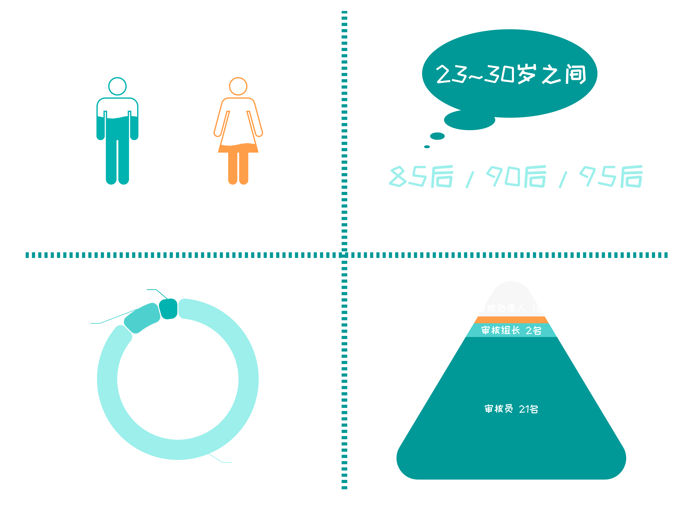

我们收集了来自24位曾在字节跳动、B站、网易、小红书等平台工作的审核员的深度访谈，
内容有关工作环境、技术管理、职业影响、初心与价值等话题。
一.他们是谁？
这24位审核员可以折射这个群体的大致形象：他们是有着时间和身体资本的年轻人，大部分人的学历比不上其他职员那般光鲜，只是大厂流水线上普普通通的一员。

二.不可或缺却无人在意
这是一场数字追逐游戏。作为游戏主角的互联网企业渴望着更好看的用户数据、更海量的互动内容，而大厂中的审核员们则像被蒙住眼睛的赛马，只能靠周围马匹的动静来确定目标，追逐着愈加遥远的任务终点，每秒钟奔跑的速度要快点，再快点，可是终点又在何方？